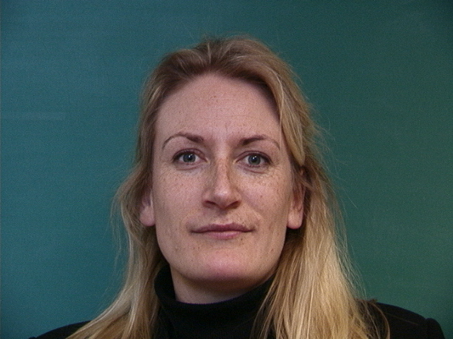
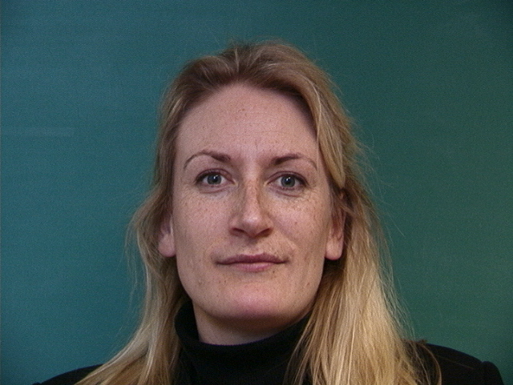
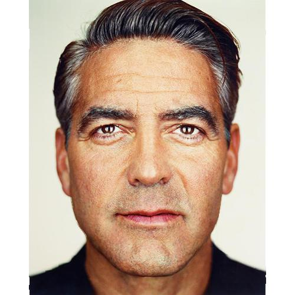
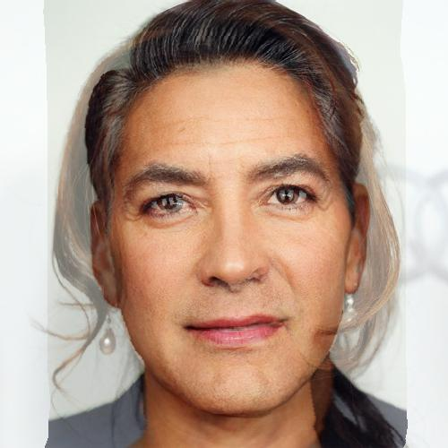

Khoa Hoang
Overview.
The project attempts morphing between different faces by a-2 step process: Warping and cross-dissolving of the image colors.
The warping process is defined by choosing multiple corresponding points on each image, which map eyes to eyes, mouth to mouth, chin to chin, ears to ears...
From there, a midway face in the between of the morphing process and a morphing sequence will be produced.
Finally, the project also finds the mean face of a given population (of images) and applies that mean shape onto another image with different facial features and vice versa.
Defining Correspondences
This first step is achieved by choosing 50 different corresponding points.
In the first pair of images, due to long processing time, I chose smaller images of Brad Pitt and Justin Timberlake for testing the functions. Then bigger images between George Clooney and Robert Downey Jr. are processed. The mappings are showned below.
The Triangulation was achieved by using Delaunay algorithm.
Midway Face
An average shape was achieved by using the equation below with the weight of .5:
averagep_points[i] = weight * im1_points[i] + (1 - weight) * im2_points[i]
With the points for images 1 and 2 specified by the user, and a calculated average points between the 2 images, a set of triangles will be generated using Delauney Triangulation.
Then each triangle in the source images will be warped into the corresponding triangle in average shape to get the midway face.
The colors cross-dissolving process was also achieved by averaging the colors in the pixels of the source images with a weight of .5
result[a, b] = weight * im1[x1, y1] + (1 - weight) * im2[x2,y2]
With x1, y1, x2, y2 found from the step above.

Morph Sequence
Using the same process as the previous part but this time the process is repeated 45 times with different weights genereted by function numpy.linspace(0,1,45) to generate 45 evenly spaced weights from 0 to 1.
All the frames are saved and combined into gif files which allows .1 second for each frame.


Mean Face
This section was completed using Dane's Free Data Sets for Statistical Models of Shape which includes 30 male and 7 male faces.
The average face shape for the set was achieved by averaging the sum of all the given corresponding points.
average_shape = average(sum(each_face_corresponding points))
Then each face is morphed into the average shape and the mean face was obtained by averaging all the morphed faces.
mean_face = average(morphed_faces)
Mean Face
Some of the faces in the data set warped into the average shape
 


 George warped into Mean Face
George warped into Mean Face
Mean Face warped into George
Carricatures
By adding the weighed difference between the shape of George's face and the average shape, and the shape of the mean face itself, the carricatures of George's image were generated.
carricature = weight * (george's shape - average_shape) + average_shape
There's no change when weight = 1. It looks exactly the same as the previous part when George's face is warped into the mean shape when weight = 0. However, George's face is squeezed when weight < 0 and expanded when weight > 1.
Weight = 0
Weight = 1
Weight = -1
 Weight = 2
Weight = 2
Bells and Whistles - Change of Race, Gender, Smile
I was currious how George would look like if he's morphed into different race, gender and smile. Since I'm so in love with 'Crazy Rich Asians', I would like him to morph into Michelle Yeoh.
Michelle Yeoh
 Murphhhhh
Murphhhhh
George
Look how beautiful George is